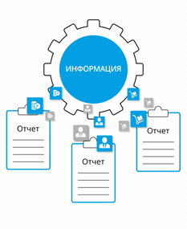

Управляем цифровыми данными с 2016 года
Разработка под ключ корпоративных хранилищ данных. Импортозамещение. Аналитика.
Наши разработки успешно применяются для принятия стратегически верных решений в совершенно разных сферах:
-
FMCG
-
ТРАНСПОРТ
-
БАНКОВСКИЙ
СЕКТОР -
Государственные
учреждения -
Промышленность
и производство -
Бюджетирование,
планирование, KPI
Рассказать, что мы может сделать для Вашего бизнеса?
Информация - лучший инструмент управления бизнес-процессами
Мы разрабатываем индивидуальные решения для систематизации и анализа данных, каждый день получаемых вашей компанией.
-
Аккумулирование
данныхВсе данные разных филиалов, департаментов, подразделений и отделов собираются автоматически в 1 месте.
Аккумулируйте данные разных филиалов, департа-ментов и отделов автоматически в 1 месте.
-
От хаоса
к системеОбладая всей информацией, можно проанализировать любой вопрос целиком, увидеть неявные связи и учесть влияние неочевидных факторов.
Анализируйте ситуацию, основываясь на полном объеме данных, учитывайте неочевидное.
-
Легкое сопровождение, минимальная стоимость
Мы разрабатываем продукт «с человеческим лицом» — вы сможете без труда поддерживать работоспособность всех компонентов системы.
Платите минималь-ную стоимость за оперирование и владение. Поддержи-вайте с легкостью работоспособность всех компонентов систем
-
Углубленное
логированиеВся необходимая информация есть в логах, что значительно упрощает оперирование системой и исправление ошибок.
Вся необходимая информация есть в логах, что значи-тельно упрощает оперирование системой и исправление ошибок.
-
Аналитическая отчётность
в виде кубовМы собираем и готовим данные так, чтобы сотрудники могли легко выстраивать отчеты и эффективно анализировать данные.
Аналитическая отчётность в виде кубов.
-
Отчёты
по требованиюЛегкое построение отчетов «под запрос» за прошлые периоды в любых разрезах.
Отчёты по требованию - легкое построение отчетов “под запрос” за прошлые периоды в любых разрезах
Запросить презентацию для принятия решения
Сделать запросЗаказать обратный звонок
Узнайте, чем мы можем быть полезны именно Вам
Как это работает
-
Источники
Мы разрабатываем решение по сбору данных из всех используемых вами ресурсов. -
Хранилище
Полученные данные не просто хранятся. Они обрабатываются, анализируются и приводятся к единой системе исчислений. -

-
Витрина данных /

data martДанные из любых источников легко структурируются в нужные регулярные или разовые отчеты в необходимом разрезе. -
Визуализация
Полученная информация наглядно отображаются на дашбордах и инфографике. Вы можете наблюдать динамику изменений в реальном времени.
-
6
признаков
что используемое Вами ПО недостаточно эффективно
-
1
Дорого содержать
Большие затраты на поддержку, лицензии, оплату серверов и облачных решений, риск потери данных в случае работы с иностранным ПО.
Высокие затраты на содержание, риск потери данных в случае работы с иностранным ПО.
-
2
Отсутствует необходимый функционал
Нельзя составить отчет в разрезе необходимых переменных, нет нужной формы визуального представления информации.
Нет необходимого функционала для составления отчетов, визуального представления информации
-
3
Долго строятся отчеты или данные в них не актуальны
Т.е. данные из систем источников идут долго и успевают устареть.
Отчеты строятся долго, данные не всегда актуальны и корректны
-
4
Не объединено
Данные вроде в одном месте, но сравнивать их сложно. Одни и те же объекты имеют разные коды, для сравнения надо выбирать объекты в ручную.
Собранные данныесложно анализировать, нет возможности автоматизации
-
5
Частые ошибки
В системе много нестыковок, из-за чего в отчетах данные отображаются некорректно. Первопричины искать сложно и долго, принятие решений затягивается.
Частые ошибки в отчетах из-за нестыковок в системе, что затягивает принятие решений.
-
6
Сложно/дорого добавить новый источник
Система настолько монолитна, что добавление нового источника оборачивается большими затратами времени и ресурсов.
Сложно/дорого добавить новый источник из-за монолитности системы
Примеры отчетов и дашбордов
которые наши клиенты уже сегодня используют в работе
-

Анализ доходов и расходов компании за выбранный период
-

Сводка по результатам опроса сотрудников
-

оценка эффективности рекламны за выбранный период
Разработка решения для: гос. структура, один
из федеральных органов исполнительной власти
КАК было:
Разрозненные отчёты от подотчётных организаций, планы расходования бюджетных средств, множество никак не связанных показателей и целевых значений. Невозможность анализа полной картины.
Описание проекта:
Разработка хранилища данных и отчётов. СУБД oracle, позже перевели на postgresql. Объединили отчётные показатели и цели по государственным программам развития. Построили систему отчётности для мониторинга исполнения госпрограмм. Разработали механизм публикации открытых данных для посетителей портала.
Как стало:
Отчётные данные консолидированы и соотнесены с показателями госпрограмм. Разработаны графики и отчёты по всем собираемых показателям. Отчёты и показатели структурированы в группы и доступ к ним представляется на основе ролевой модели.
Разработка решения для: гос. структура, один
из федеральных органов исполнительной власти
КАК было:
Разрозненные отчеты от предприятий, нет контроля сдачи отчетности, данные хаотично дублировались в разных отчетах. Предприятия вынуждены выделять отдельного специалиста для ведения отчётности. Нет перекрестной проверки показателей на корректность, нет данных по регионам и отраслям. Низкая информативность получаемых отчетов, несмотря на высокие время затраты на проверку и сведение информации.
Описание проекта:
Построение хранилища данных для государственной структуры федерального значения. Автоматизация сбора отчётности, как из формализованных источников (excel, csv), так и из слабо формализованных источников (web, word). В качестве БД использовалась СУБД PostgreSQL. Также было подготовлены витрины данных и разработаны dashboard для вывода отчётов, разработан механизм послания отчётов на базе аналитических кубов.
Как стало:
Объем собираемых отчетов уменьшился в разы, предприятия подают отчетность без дублирования данных. Отчеты аккумулируются в хранилище данных, что позволяет выводить аналитические сводки не только по конкретному предприятию, но и суммировать данные по отраслям, регионам и многим другим параметрам. Пропала необходимость собирать с предприятий исторические справки по новым формам отчётности. Если информация собиралась, то отчёт по новой форме не требует от предприятий присылать данные за прошлый период. При объединении регионов, отраслей, форм собственности и т.п., данные по новым справочникам перестраиваются автоматически. Появилась возможность использовать алгоритмы bigdata. Стало возможно анализировать данные в масштабе отрасли / сегмента экономики, строить прогнозы и выбирать наиболее требующие внимания отрасли и точечно по предприятиям.
Разработка решения для:
Банк федерального значения
КАК было:
Более 30 информационных систем с никак не связанными данными. Сверки производят в excel с большими затратам человеко-часов. Никакой отчётности.
Описание проекта:
Создание хранилища для консолидации показателей работы. Разработка портала для публикации отчётов и отслеживания KPI. Автоматизация рассылки регламентных отчётов. СУБД PostgreSQL
Как стало:
Данные из источников объедены в единое хранилище данных. Загрузка из внешних источников автоматизирована, загрузки ведутся по расписанию и внешним вызовам. Создан информационный портал с возможностью отслеживать показатели из всех информационных источников компании.
Разработка решения для: Международная компания с более чем 100
торговыми представительствами только на территории РФ
КАК было:
Хранилище данных построено на облачных технологиях, для загрузки используется elt подход. Огромные затраты на инфраструктуру. Из-за использования elt подхода передача знаний и модификация текущих загрузок сильно осложнённая. Для поиска ошибок интеграции требуется привлечение высококвалифицированных специалистов. Ничего не документировано из-за чего поддержка становится ещё сложнее.
Описание проекта:
Создание хранилища данных на СУБД PostgreSQL и etl сервере CloverDX. Загрузка в хранилище данных из белее чем 50 источников в самых разных форматах: csv файлы, excel, api, Kafka, СУБД MsSql и т.д. Объем хранилища более 30ТБ
Как стало:
Создано множество универсальных загрузчиков для различных типов источников, все загрузки параметризируются. Затраты на содержание инфраструктуры сократились более чем 3 раза. Скорость обработки данных существенно возросла. Это дало возможность анализировать данные от поставщиков в день получения, а не на следующий. Для всех компонентов есть логи по этапам работы, что сократило затраты на сопровождение системы в более чем 4 раза. Использование etl подхода помогло существенно разгрузить СУБД и позволило снизить требование к серверам, что сократило издержки при эксплуатации. Также использование etl--сервера CloverDX позволило упростить передачу знаний и сократить время погружения новых специалистов при разработке. Все загрузки были документированы и заказчик получил полное понимание работы хранилища.
Узнайте,
как мы можем помочь вашему бизнесу
-
Разработали хранилища общим объемом 500 ТБ
-
Снижаем стоимость владения хранилищем путем перехода с иностранного ПО «импортозамещения» более чем на 70%
-
Увеличиваем скорость получения информации/отчетов более чем 50%
-
Сокращаем время расчета показателей/отчетов от источников данных до конечного получателя в 4 раза
Узнайте, как мы можем
помочь Вашему бизнесу
Присоединяйтесь к нашей команде!
Работайте с передовыми умами в бизнесе.